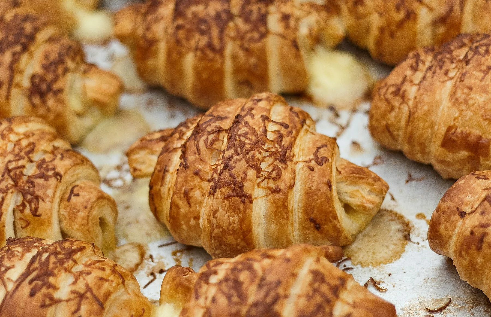

TAKE YOUR TIME.店舗情報を見る
ABOUT THE CAFE
まちのダイナーで、ひと休み。
京都・下鴨西本町、大文字ビル1階のサンドイッチとカフェのお店。
食べログではサンドイッチ・カフェとして掲載されています。現在の提供内容と営業予定は公式Instagramをご確認ください。
紹介文の出典を見る
PLAN YOUR VISIT
訪れる前に。
公開情報の確認日：2026年11月26日。住所・営業内容は掲載時点の情報で、変更される場合があります。
ABOUT THE CAFE
京都・下鴨西本町、大文字ビル1階のサンドイッチとカフェのお店。
食べログではサンドイッチ・カフェとして掲載されています。現在の提供内容と営業予定は公式Instagramをご確認ください。
紹介文の出典を見る
PLAN YOUR VISIT
公開情報の確認日：2026年11月26日。住所・営業内容は掲載時点の情報で、変更される場合があります。